Everything on Invoices
In the office app, press Help and type everything on invoices
: the tour plays on your own screen, with your own data.
-
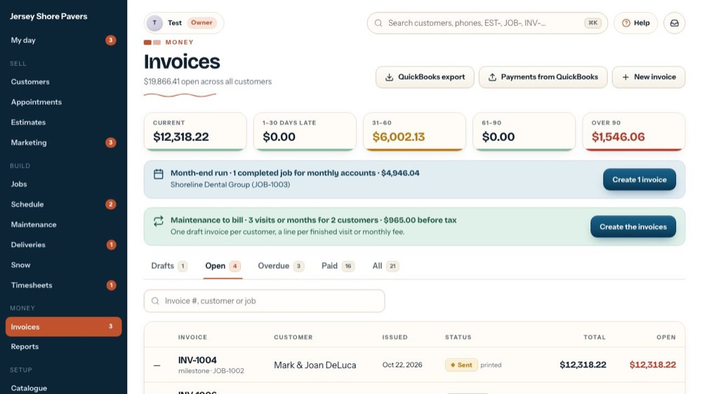
1Invoices
Every bill in one place. The line under the title is the total still open across all customers.
-
 2
2QuickBooks export
Makes the files QuickBooks Online imports: customers, invoices or payments for a date range. Let's open it.
-
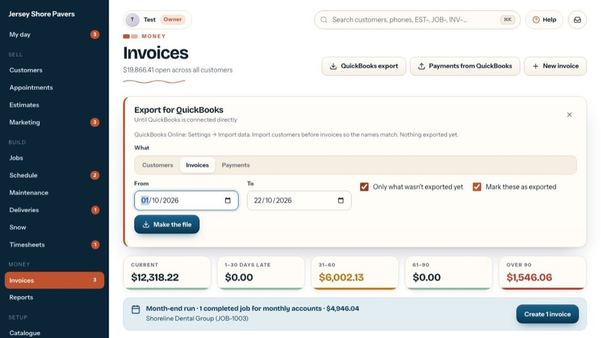
3Customers, invoices or payments
Pick what goes in the file. Export customers before invoices so the names match in QuickBooks. Payments come out as a deposit list for the bookkeeper.
-
 4
4Make the file
Builds the file for the dates you pick, then offers Download and Copy. The QuickBooks tour shows every option. The tour doesn't make a file.
-
5
Close the panel
The X closes it without exporting anything.
-
 6
6New invoice
For work outside a job: a service call, extras. Job invoices come from the job's payment schedule instead.
-
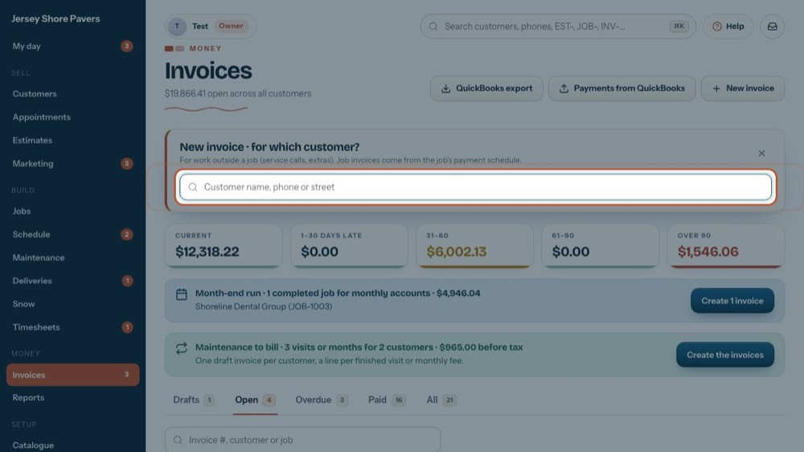
7Which customer?
Type a name, phone or street. Clicking a customer in the list makes a new draft invoice for them right away and opens it, ready for its lines.
-
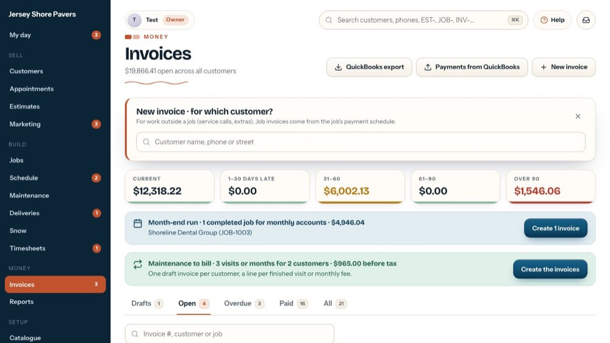
8Close it
Close it if you only wanted to look. Nothing is made until you pick a customer.
-
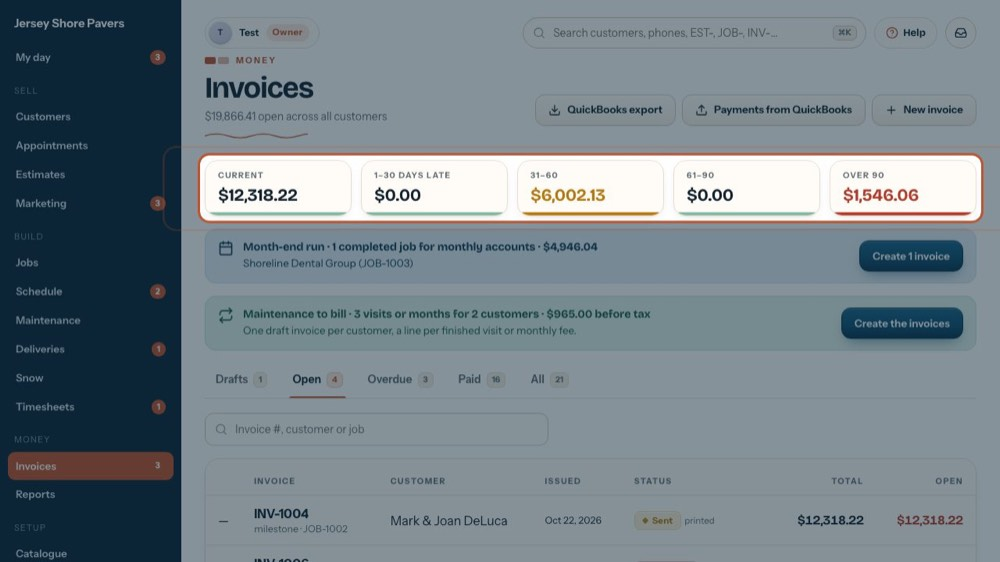
9How late the money is
Open money by age. Current is not due yet; 1-30 and 31-60 days late turn amber; 61-90 and Over 90 turn red.
-
 10
10Month-end run
When customers billed monthly have finished jobs, a Month-end run bar shows above the tabs. Create … invoices makes the drafts after asking. No bar = nothing to bill.
-
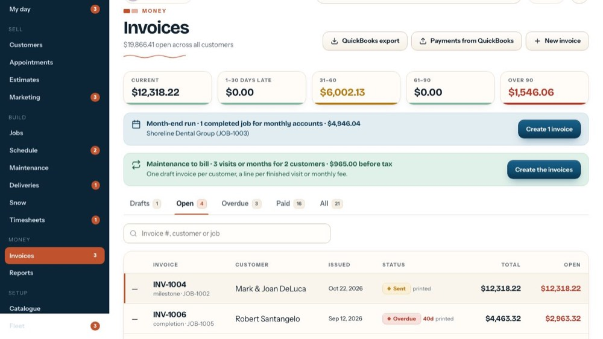
11Maintenance to bill
Finished maintenance visits and monthly fees show in a green bar. Create the invoices makes one draft per customer, a line per visit or month, with no extra question.
-
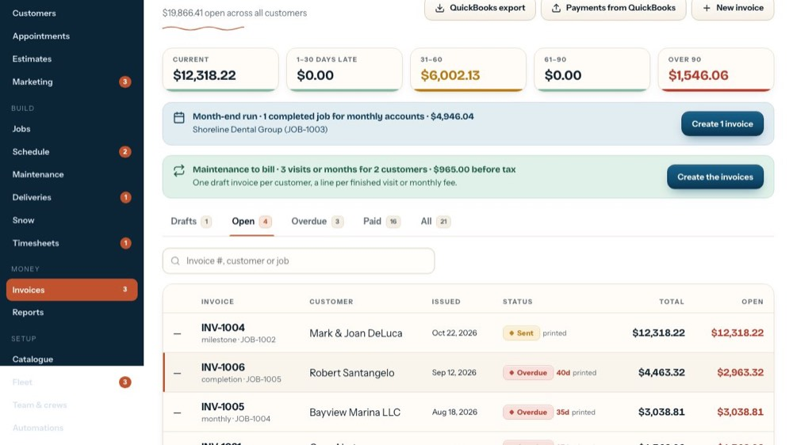
12Drafts
Invoices not sent yet. Open one to change the lines, dates and note, then Email now or Print now.
-
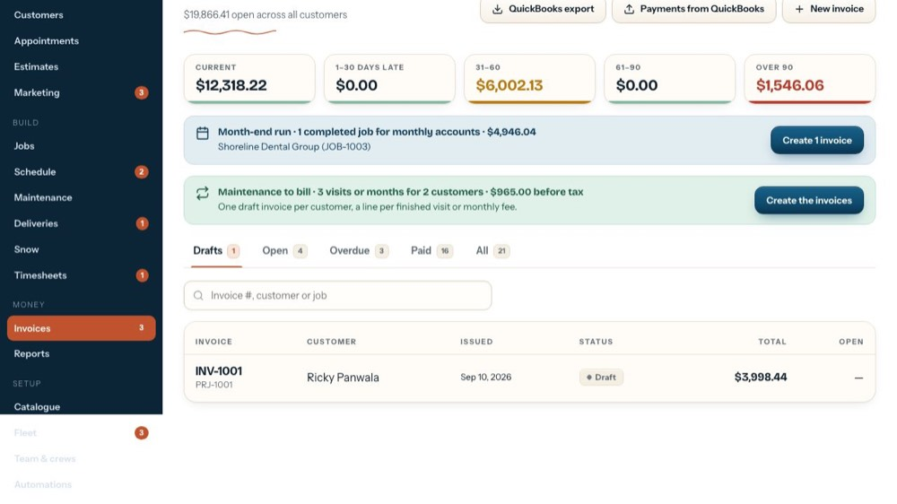
13Open
Sent and not fully paid, overdue ones included. The list to work from every day.
-
14
Overdue
Past the due date. The red number next to the status is how many days late.
-
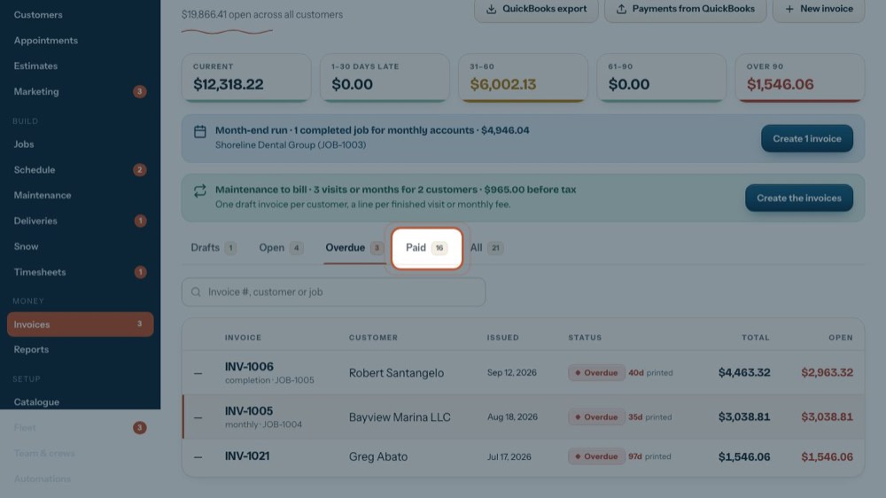
15Paid
Paid in full.
-
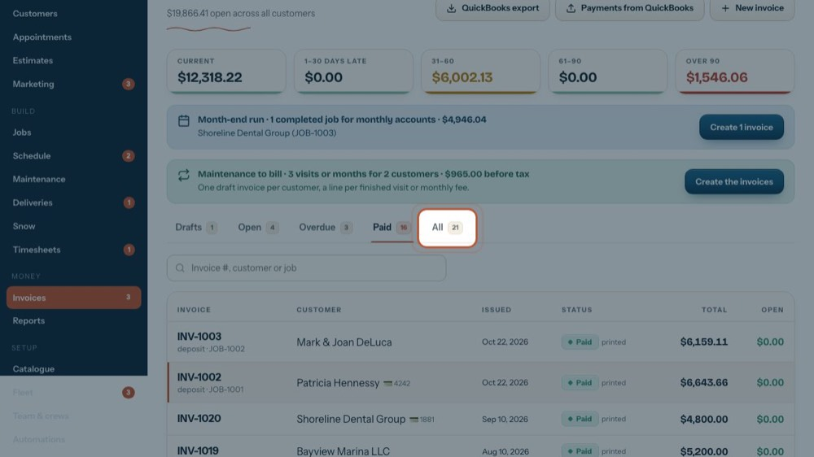
16All
Every invoice: drafts, open, paid and void.
-
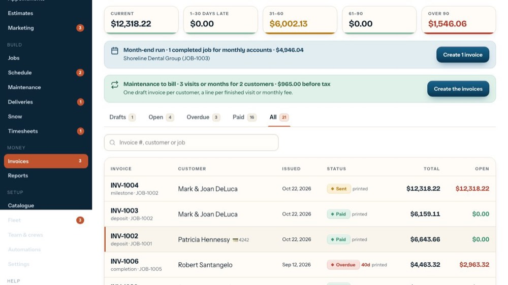
17Search the list
Type an invoice number, customer or job number. It filters the tab you're on.
-
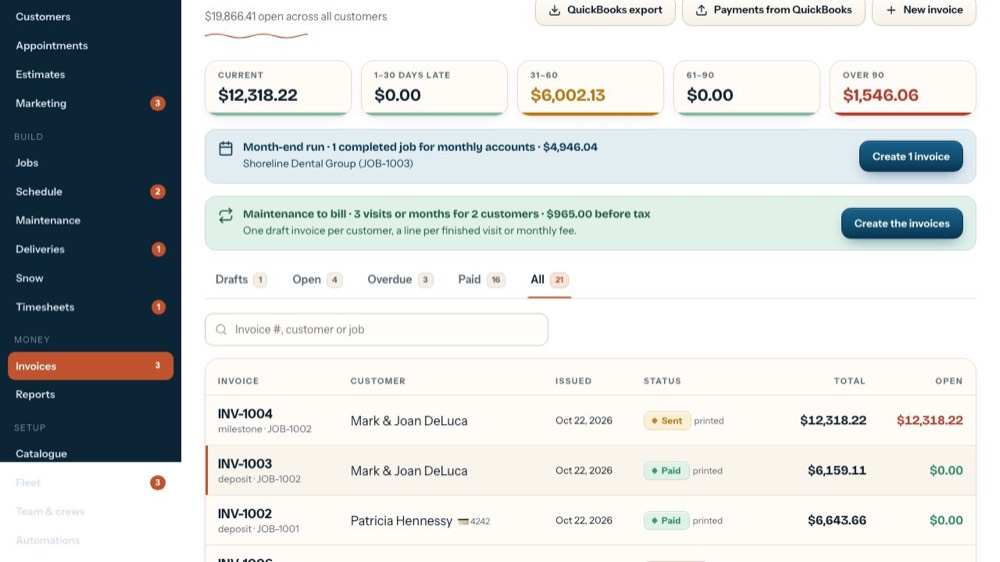
18Back to Open
Charging cards on file works from the Open and Overdue tabs.
-
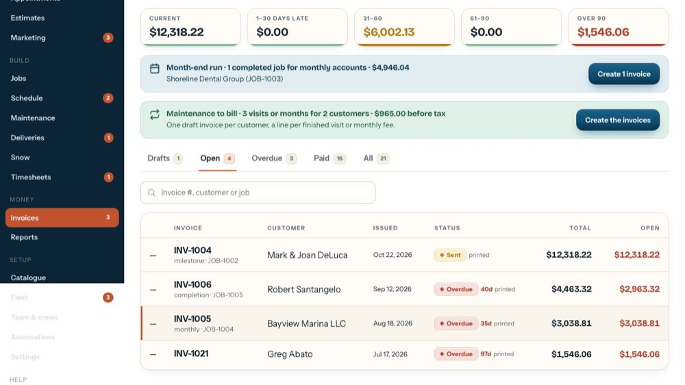
19Charge cards on file
When open invoices have a card on file, rows get a tick box and 'Select all with a card' shows here. Then 'Charge N cards' charges them in one batch, after asking.
-
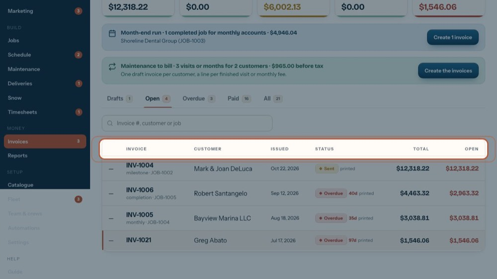
20The columns
Invoice number with its kind and job, the customer (💳 = card on file), date issued, status with days late and emailed or printed, the total and what's still open.
-
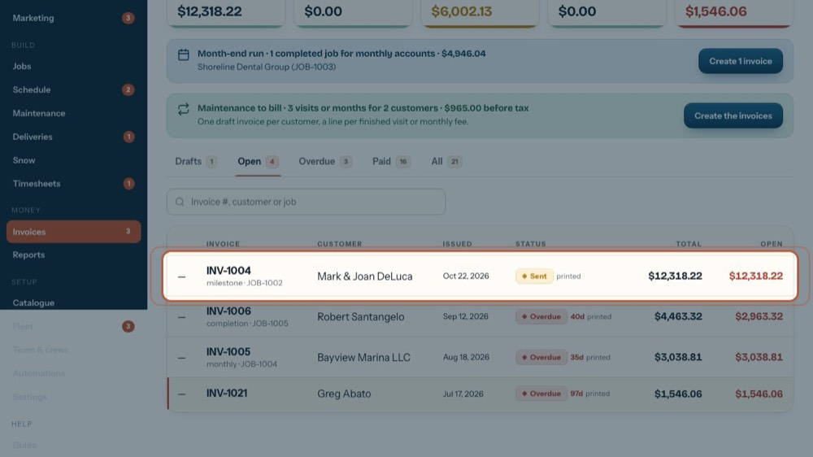
21Open an invoice
Click any row to open it: lines, the customer copy, payments. The tour 'Everything on an invoice' walks through that screen.